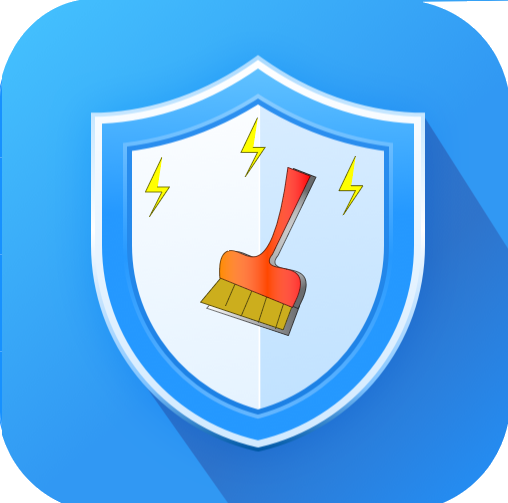
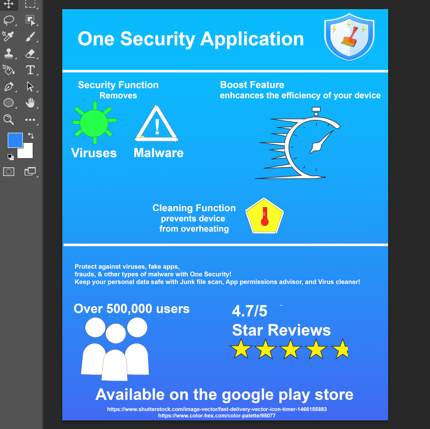
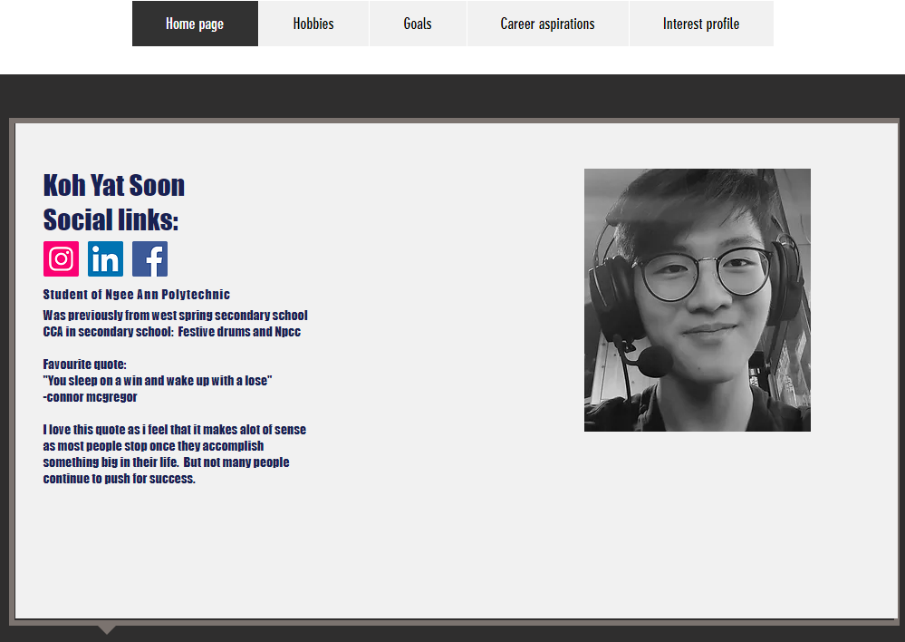
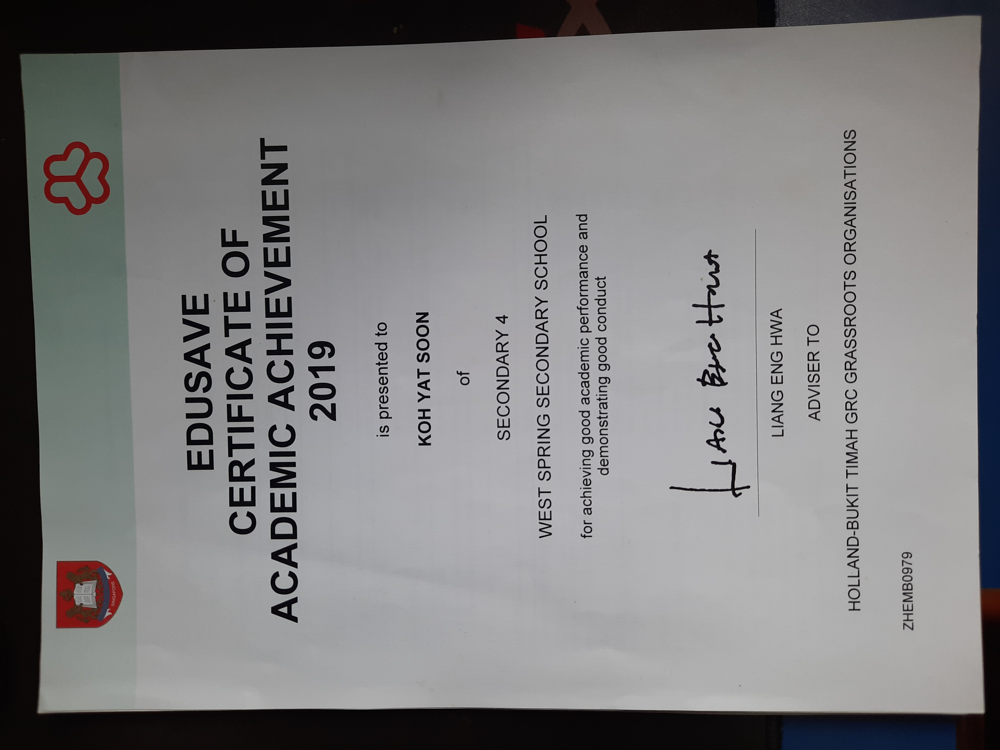

Application logo redesign that i did for my module's assessment. The objective of the assesment was to re-design the application logo. Hence, i re-designed the logo by adding in more elements into the logo as the old logo was plain and was unable to allow its users to know about the applications features. This project enabled me to learn how to use the adobe illustrator software to create and to design a logo.
Application infographic that i designed for an application for my module's assessment. The goal of the project was to design and infopgrahic to showcase the application's features and list down some of the applications information. This project taught me how to use the adobe photoshop software and also taught me how to make use of color palettes for my projects.
Personal website that i did for my module's assessment. The objective of this project was to create a portfolio website to allow users to know more about me. In this project i learnt how to properly use wix to create a website and design a website using the various features from wix.
Feel free to click on the image below to go to my wix website.
In 2019 i received an edusave certificate. This certificate is only awarded to the top 10% of students who have done well during their n-levels.
